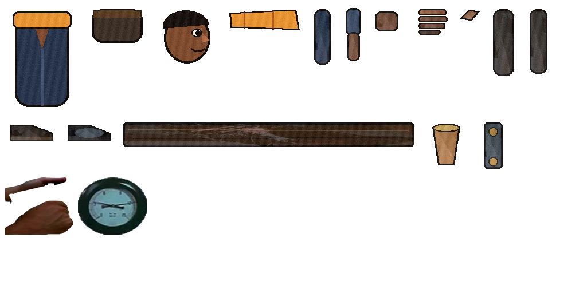
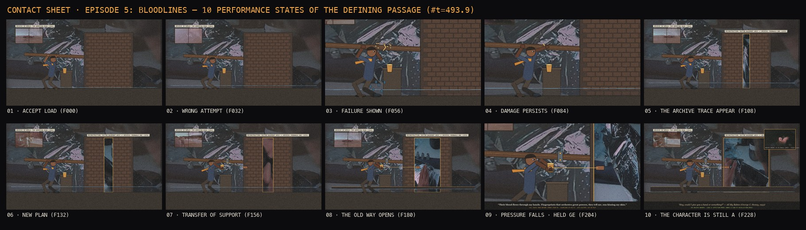

STATE 1.2 · Staging & Camera Topology
STATE 2 · Flip-Test & Checkpoint Mode
STATE 4 · Inside-Out Kinematic Hull
Director Translation Protocol
STATE 1.1 · Dramatic Beat & Causality Graph ([STIMULUS] → [PERCEPTION] → [THOUGHT] → [ANTICIPATION] → [ACTION EXTREME] → [CONTACT] → [SETTLE])
STATE 2.3 · Executable Exposure Sheet (X-Sheet · 24 FPS · Pose Keys K vs 3s Clock Keys vs Contact Pins)
Found-Footage Cut-Out & Ink Episode Studio (TROUTTOWN: TEMPUS FUGIT × THE FOUND ODYSSEY · #t=493.9)
The 10 Performance States of the Defining Passage (240 Frames = 10.0s @ 24fps · Click any state to scrub live 2-Bone IK Rig & Video)


The Epistemic Ledger (foundry/epistemic_ledger.md) & Source Manifest (foundry/source_manifest.json)
COLUMN 1 · VERIFIED ARCHIVE
• Call Track: Mark Anthony Thomas, Where You Go When You Leave Poem 05: Bloodlines (
480.11s–500.20s, WGY041).• Primary Plate: Moonwalk One (ca. 1970,
P05-008, 89 frames) + The American Road (1953, S125) + Master Hands (1936, Sign 33).• Spoken Answer: All My Babies (1953, George C. Stoney): “Hey, could I give you a hand or something?”
COLUMN 2 · CHARACTER BELIEF
• States 01–03 (Solo Load): Boone (as The Poet) believes the childhood basement ceiling must be held up by his own arms alone and that the bricked wall seals off “a history too battered and bruised to travel.”
• Disproved in States 05–08: The beam knot cracks, soaking his right foot, and the fallen plaster reveals the archive waiting inside the masonry.
COLUMN 3 · INVENTED RECONSTRUCTIONS
• On-Screen Ransom Labels: Every reconstructed element carries a cut-out label while on screen and in the end credits.
•
REC_01_DAYTON_BASEMENT_ARCH: Reconstructed bricked arch (`X=980..1540`) & sagging southern-wood beam registered to `P05-008`.•
REC_02_BOONE_POET_RIG: 12-part cardboard + AI-cel (`S02_P2`) + 2-bone IK rig with melanated OKLab skin ramp (`#442719 → #b06e48`).Independent Critic Review Log (foundry/validation_log.md · Round 1 Draft
NOT YET → Round 2 Repaired PASS)